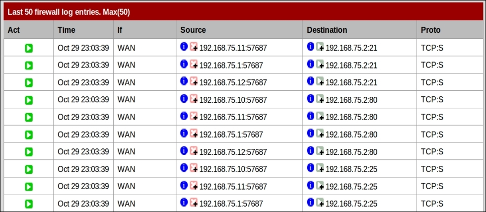
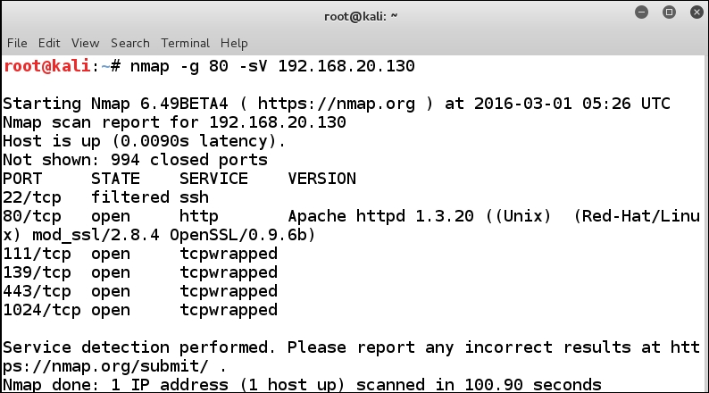

>> CSC 2901 - Active Intelligence Gathering-A # very aggressive and noisy, like a wild bear when it's awake in winter
-F # scanning only top 100 ports
-sA # stateful port? can test firewalls
-sS # SYN stealthy scan
-sX # XMAS stealthy scan, good for UNIX scanning
-sI # zombie host scan, super stealthy
-sV # service version
-sC # run default nse scripts according to -sV
-sP # ping scan
-Pn # no ping, gotta be stealthy!
-p- # all the ports from 0 to 65535
-n # do not do DNS resolution, will save time
-v # verbose mode, show all the output possible
-T(0-5) # timing, how fast you want to scan; set to 0 if paranoid
--reason # why the port is open?
--open # show results for open ports only
--spoof_mac # creates a fake MAC address to send packets from
--scan_delay # adds a delay between probes; do not use with max_parallelism
--max_parallelism # how many probes you want at once?
--packet-trace # will show the packets that are sent and recieved
-oX # outputs results in XML
-oG # outputs results in a greppable format
-oA # outputs result in normal, grappable, and XML
More info: https://pentestlab.blog/2012/04/02/nmap-techniques-for-avoiding-firewalls
Idle scan - put blame on zombies: https://nmap.org/book/idlescan.html
Want to find zombies? Sure! Scan for 1000 random IPs to see if some of them are zombies:
$ nmap -iR 1000 --script ipidseq -T4 -v -oA zombies
Want to find anonymous FTP servers to store your files temporarily?
$ nmap -iR 1000 --script ftp-anon -T4 -v -oA ftpAnon
Want to decoy machines on the network to confuse the admin?
$ nmap -D IP_1,IP_2,IP_3,ME -p 80,21,22,25,443 -Pn REAL_TARGET_IP
Example (from Book: Advanced Penetration Testing for Highly-Secured Environments - Second Edition):

$ nmap -p- -sS -n -v --reason --open -oX demo-ports.xml 127.0.0.1
$ nmap -sU -n -v --open --reason 127.0.0.1
$ nmap -sS -sV -sC -v -n -p 21,22,80 127.0.0.1
Update: $ nmap -script-updatedb
All scripts: https://nmap.org/nsedoc/
Let’s hunt for community strings that are like passwords for communicating with devices.
Fast SNMP scanner: https://github.com/trailofbits/onesixtyone
$ onesixtyone -c dict.txt 192.168.0.1
Try other dictionaries as well.
To have better chances in guessing community strings, try add your own ideas like tntech-public or tntech-private.
In Metasploit:
use auxiliary/scanner/snmp/snmp_enum
use /auxiliary/scanner/snmp/snmp_enumshares
TCP Wrapper is a host-based network access control mechanism in Unix-based systems.
When we nmap a host, we will see tcpwrapped services like this (from Book: Building Virtual Pentesting Labs for Advanced Penetration Testing - Second Edition):

There are two files that take care of it: /etc/hosts.allow and /etc/hosts.deny.
For example, for SSH, we can run nc with -p option that defines where the traffic is coming from:
nc -p 20 IP_ADDR 22